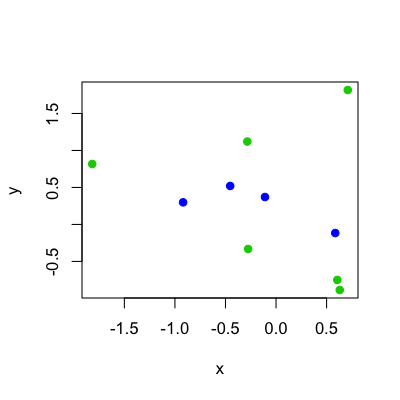
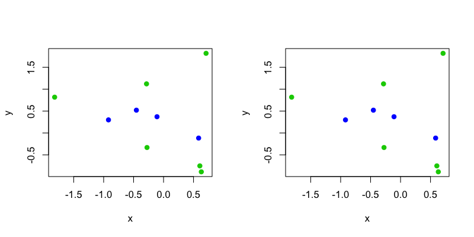
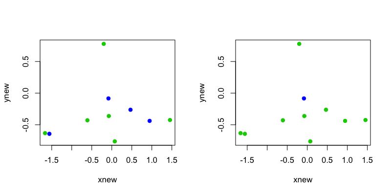

- Sub-sampling the training data
- Avoiding overfitting
- Making predictions generalizable
Cross validation
Jeffrey Leek, Assistant Professor of Biostatistics
Johns Hopkins Bloomberg School of Public Health
Key ideas
Steps in building a prediction
- Find the right data
- Define your error rate
- Split data into:
- Training
- Testing
- Validation (optional)
On the training set pick features On the training set pick prediction function On the training set cross-validate - If no validation - apply 1x to test set
- If validation - apply to test set and refine
- If validation - apply 1x to validation
Study design

http://www2.research.att.com/~volinsky/papers/ASAStatComp.pdf
Overfitting
set.seed(12345)
x <- rnorm(10); y <- rnorm(10); z <- rbinom(10,size=1,prob=0.5)
plot(x,y,pch=19,col=(z+3))

Classifier
If -0.2 < y < 0.6 call blue, otherwise green
par(mfrow=c(1,2))
zhat <- (-0.2 < y) & (y < 0.6)
plot(x,y,pch=19,col=(z+3)); plot(x,y,pch=19,col=(zhat+3))

New data
If -0.2 < y < 0.6 call blue, otherwise green
set.seed(1233)
xnew <- rnorm(10); ynew <- rnorm(10); znew <- rbinom(10,size=1,prob=0.5)
par(mfrow=c(1,2)); zhatnew <- (-0.2 < ynew) & (ynew < 0.6)
plot(xnew,ynew,pch=19,col=(z+3)); plot(xnew,ynew,pch=19,col=(zhatnew+3))

Key idea
- Accuracy on the training set (resubstitution accuracy) is optimistic
- A better estimate comes from an independent set (test set accuracy)
- But we can't use the test set when building the model or it becomes part of the training set
- So we estimate the test set accuracy with the training set.
Cross-validation
Approach:
Use the training set
Split it into training/test sets
Build a model on the training set
Evaluate on the test set
Repeat and average the estimated errors
Used for:
Picking variables to include in a model
Picking the type of prediction function to use
Picking the parameters in the prediction function
Comparing different predictors
Random subsampling

K-fold

Leave one out

Example
y1 <- y[1:5]; x1 <- x[1:5]; z1 <- z[1:5]
y2 <- y[6:10]; x2 <- x[6:10]; z2 <- z[6:10];
zhat2 <- (y2 < 1) & (y2 > -0.5)
par(mfrow=c(1,3))
plot(x1,y1,col=(z1+3),pch=19); plot(x2,y2,col=(z2+3),pch=19); plot(x2,y2,col=(zhat2+3),pch=19)

Notes and further resources
- The training and test sets must come from the same popluation.
- Sampling should be designed to mimic real patterns (e.g., sampling time chunks for time series)
- Cross validation estimates have variance - it is difficult to estimate how much
- Cross validation in R
- cvTools
- boot